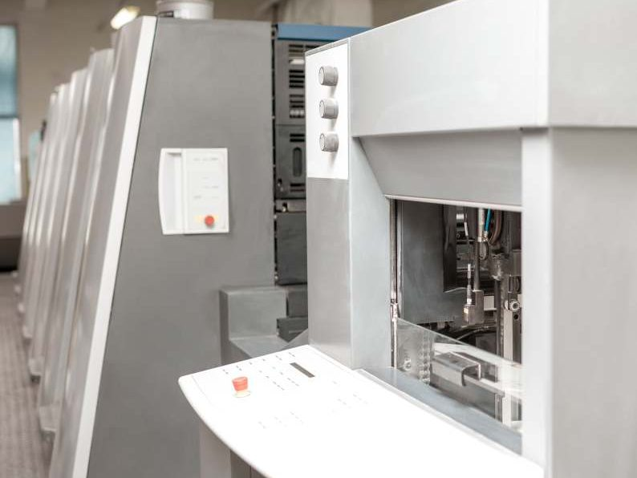
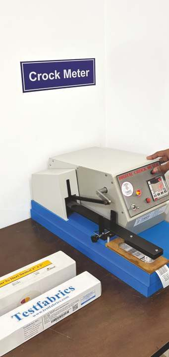
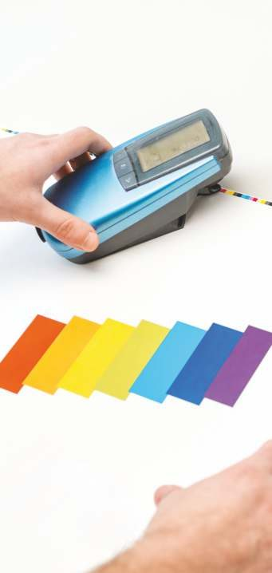
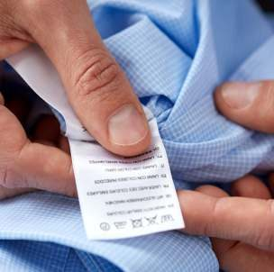
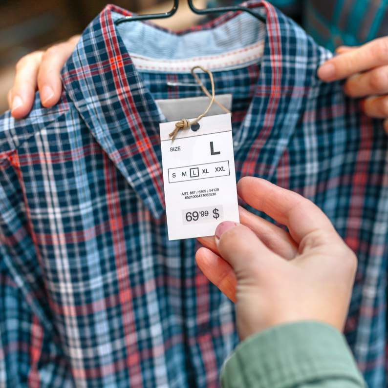
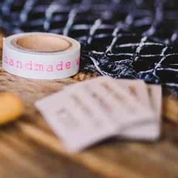
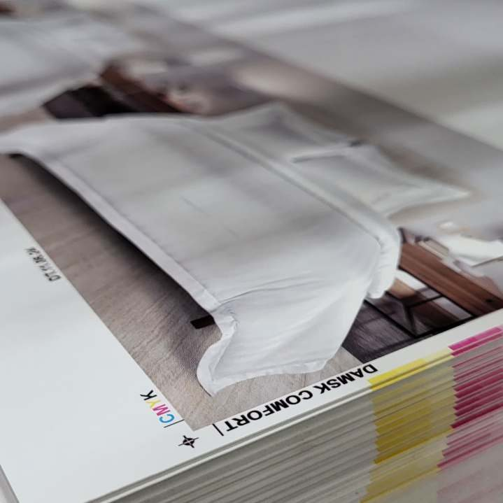

Before I designed interfaces, I built them
Omkar Labels makes clothing labels, hang tags and tapes for apparel brands, including major US retail chains. As a part-time front-end developer, I turned the designer's files into responsive pages on its WordPress site.
the job that made my handoffs better
- My role
- Junior Front-End Developer, part-time
- Timeline
- May 2022 to Jan 2023
- Team
- Worked directly with the designer
- Platform
- WordPress website
The short version
A website buyers judge
Buyers check what the company makes before they call. A broken page or an old listing costs trust with exactly those people.
Design files into working pages
Responsive pages in HTML, CSS, JavaScript, jQuery and Bootstrap, plus a catalog of 50+ products kept accurate.
Why my handoffs are detailed
I've been the developer on the other side, so my handoffs spell out states, spacing and behavior.
From the factory floor to the browser
Context: a manufacturer's shop window
Omkar Labels has made labels since 1999, in two factories: one in Thane, near Mumbai, and one in Narmadapuram, Madhya Pradesh. Every order passes a four-point quality check, and the company holds OEKO-TEX, FSC and Global Recycled Standard certifications.
The website is where buyers check all of that before picking up the phone.



The build: from design file to working page
The designer made the interface; I made it work. Responsive layouts in HTML and CSS, behavior in JavaScript and jQuery, and Bootstrap's grid so pages held together on every screen, all inside WordPress.
I also kept the product pages for a catalog of 50+ products accurate as things changed. The photos here are the kinds of products those pages carried.




Working with the designer: where designs meet reality
- When the design file and the browser didn't match, I raised it early and we solved it together before release.
- When a layout broke in one browser and not another, I traced the cause in Chrome DevTools and fixed the code, not the symptom.
Why every designer should build something
- 50+product pages kept accurate and consistent.
- 5front-end tools: HTML, CSS, JavaScript, jQuery, Bootstrap.
Having been the developer receiving the file, I know which questions a handoff leaves open. That's why my handoffs specify states, spacing and behavior, and why I can talk through HTML and CSS with front-end developers on their terms.